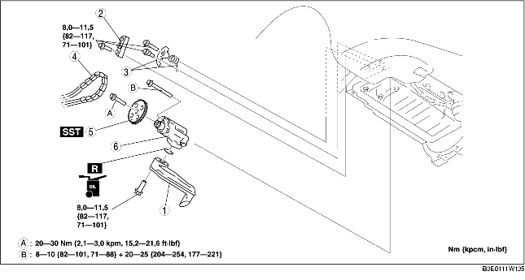

1. Demontera batterikåpan. (Se DEMONTERING/MONTERING AV BATTERIET [LF].)
2. Lossa batteriets minuskabel.
3. Demontera den undre kåpan och stänkskyddet som en enda enhet.
4. Ta bort höger framhjul.
5. Tappa ur motoroljan. (Se BYTE AV MOTOROLJA [LF].)
6. Ta bort tändstiftskyddet. (Se DEMONTERING/MONTERING AV TÄNDSTIFTSKYDD [LF].)
7. Demontera drivremmen. (Se BYTE AV DRIVREM [LF].)
8. Ställ undan kylvätskans reservtank så den inte är i vägen.
9. Ta bort luftkonditioneringskompressorn medan rören fortfarande sitter fast. (Se DEMONTERING/MONTERING AV LUFTKONDITIONERINGSKOMPRESSOR [LF].)
10. Ta loss tändspolen. (Se DEMONTERING/MONTERING AV TÄNDSPOLE [LF].)
11. Ta bort tändstiftet. (Se DEMONTERING/MONTERING AV TÄNDSTIFT [LF].)
12. Placera gasvajerkonsolen så att det är ur vägen.
13. Demontera vevaxellägesgivaren (CKP). (Se DEMONTERING/MONTERING AV CKP-GIVAREN (VEVAXELPOSITION) [LF].)
14. Demontera motorns främre skydd. (Se DEMONTERING/MONTERING AV KAMKEDJA [LF].)
15. Demontera oljetråget. (Se DEMONTERING/MONTERING AV OLJETRÅGET [LF].)
16. Demontera i den ordning som anges i tabellen.
17. Montera i omvänd ordning mot demonteringen.
18. Fyll på motorn med olja av angiven typ och mängd. (Se BYTE AV MOTOROLJA [LF].)
19. Starta motorn och kontrollera att det inte läcker någon olja.
20. Kontrollera oljenivån. (Se KONTROLL AV OLJENIVÅN I MOTORN [LF].)
21. Kontrollera tändförställningen och tomgångsvarvtalet. (Se MOTORINSTÄLLNING [LF].)

.
|
1
|
Oljesil
|
|
2
|
Oljepumpens kedjestyrning
|
|
3
|
Oljepumpens kedjespännare med fjäder
|
|
4
|
Oljepumpens kedja
|
|
5
|
Oljepumpens kedjehjul
|
|
6
|
Oljepump
|
1. Montera specialverktyget på oljepumpens kedjehjul för att hindra att oljepumpen roterar.
1. Dra åt bultarna i den ordning som visas i figuren i två steg.